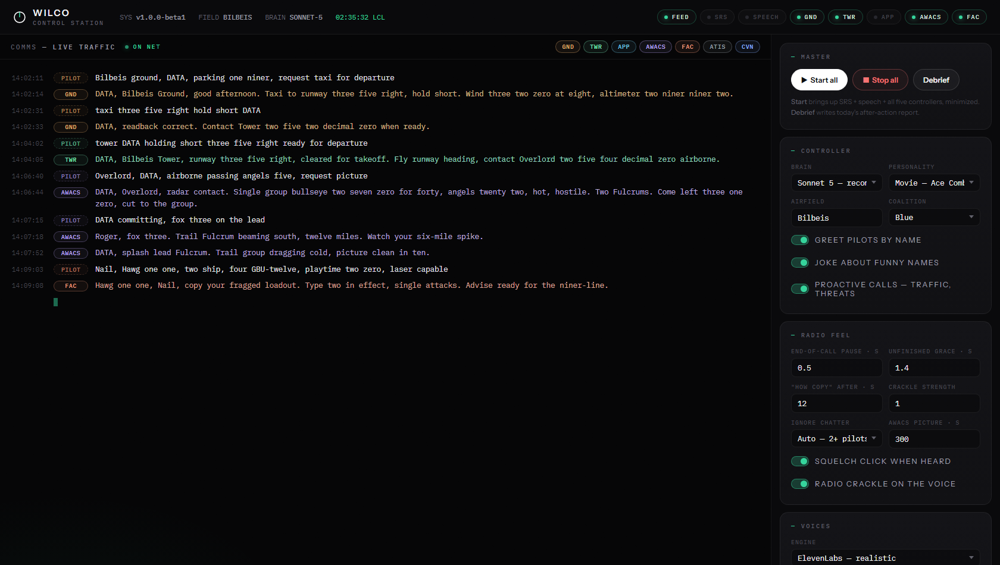

WILCO puts a full radio crew in DCS World — Ground, Tower, Approach, an AWACS that watches the whole war and a JTAC that talks your eyes onto the target. Say it your way, garbled mic and all — it understands, answers in under a second, and remembers your whole sortie.
No F-keys, no comms trees. You key the mic on SRS and talk — the crew sees the real mission through a live data feed and works you with real procedure: readbacks checked in code, handoffs that follow you station to station, wind and crosswind from the actual mission weather. These clips are the actual crew:
Textbook brevity, plain English, or a mangled transmission through a hot mic — the brain hears through it. Proven against 50,000 calls it had never seen, hesitations and static included.
Repaired to information alpha, understood, taxi clearance issued. Transpositions, dropped letters, homophones — all healed before matching.
Works exactly like the brevity call — BRAA to the nearest hostile, with closure rate and time to the merge when it's a real intercept.
It asks — "picture, or bogey dope?" — instead of guessing or going silent. One answer later, it acts.
Both answered in one transmission, like a controller who actually listened to the whole sentence.
Miss once, rephrase once — it maps your version to the right call and remembers it forever, per pilot, across sessions.
The entire crew — hearing, thinking, talking — runs on your machine. Internet down? Still works. Wallet empty? Still works. Every number it speaks is computed from live mission geometry, never invented.
58 ms to understand, first word in under a second on standard calls — it answers the moment your call is complete instead of waiting out a timer.
Ask "should I take this fight?" — it counts
the bandits, weighs your altitude, aspect and fuel, and gives a verdict with the
reasons spoken out loud.
Snap vectors lead the bandit's velocity —
"cutoff three one one, lead him and you'll meet" — with closure rate
and a countdown to the merge.
Call joker and he nudges you ten minutes later. Ask about
that SAM again — "still there, still live." A group that faded and
returns is called as the same customers.
A weapon watcher sees every missile the moment it
exists. "SAM launch — notch right, get low!" Called to the pilot it's
aimed at, with the site's bullseye.
Every call it misses is logged and shown in the panel, then mined back into the brain. Every sortie you fly makes the next update sharper.
Safety numbers — runway, heading, altitude, squawk —
are checked in code, not vibes. Get one wrong and only the wrong item is
corrected: "Negative, runway three five right — read back."
Groups inside threat range come as BRAA off your nose; the far picture stays bullseye. Multi-ship check-ins are addressed as a flight. NATO names for every threat.
A native ops panel: live transcript of every frequency, status lights, one-click start, plain-red banners when something's wrong, auto-restart of a dead controller, and an AI debrief of your sortie.
Every release must survive an automated gauntlet before any pilot sees it. These aren't marketing numbers — they're the test suite's.
Every release runs the full gauntlet — phraseology, garble, real flight transcripts, full mission simulation, adversarial stress — before it ships.
The understanding exam generates calls the brain has never stored — novel wordings, hesitations, static — and it must clear 93%. It scores 97.6%.
A hard guarantee, machine-checked: chatter, noise and even deliberate trickery can never produce a takeoff, landing or weapons clearance. Shaky safety calls get a spoken "confirm?" first — always.
Hostile-input hardening: prompt-injection attempts, corrupted mission data, interleaved pilots, flooding — no crashes, no leaks, state isolated per pilot.
Mined from actual flight logs — every real call our pilots ever made replays against each new build. If it ever worked, it keeps working.

Drop in a sample recording — the Studio strips the background music, clones the voice, generates its own training data and trains a flight-ready voice on your own GPU. Your recordings never leave your machine.
Run the installer. It sets itself up in-app: components, voices, the DCS data feed, SRS — no console, nothing manual. Multiplayer without server access? The Tacview telemetry feed gives the crew eyes, nothing installed server-side.
One code, shaped like WILCO-XXXXXXXX. No account, no API key,
nothing to buy. That's the whole beta.
Open SRS, tune 251.0–255.0, key the mic:
"Ground, request taxi." A printable kneeboard card of every call ships
in the box. Welcome to the net.
Grab an invite, install, key the mic. All five controllers, every feature, no locks. When plans launch — from $15/month for a two-ship — beta pilots keep the founding price.
Get your invite code